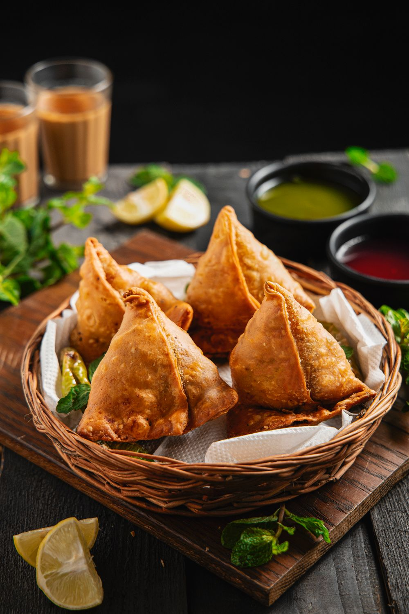
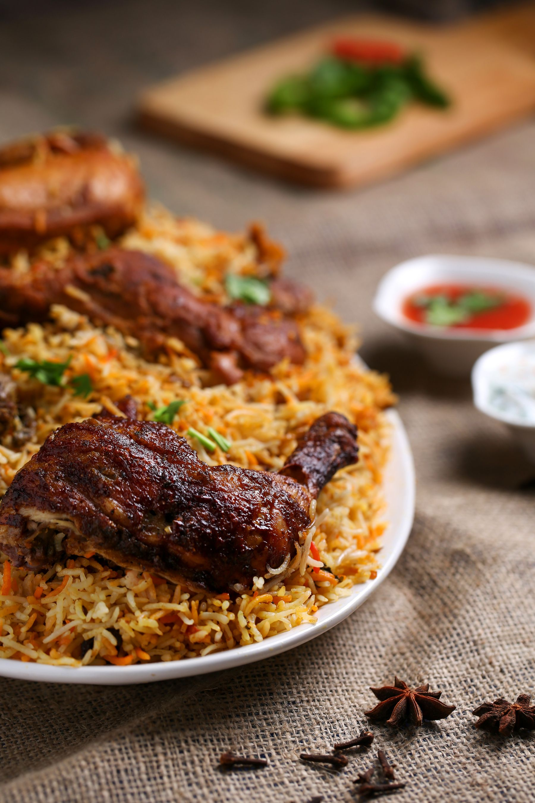
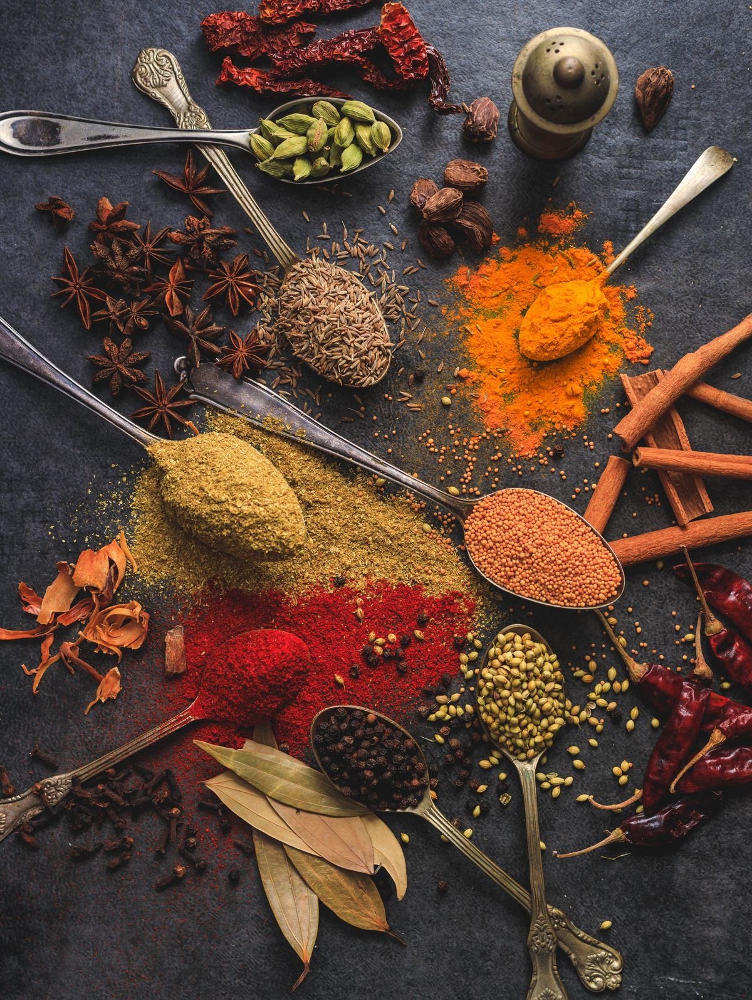
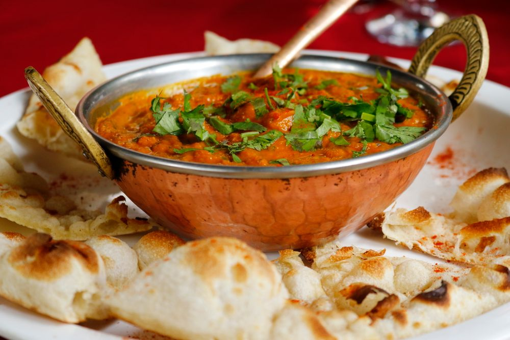
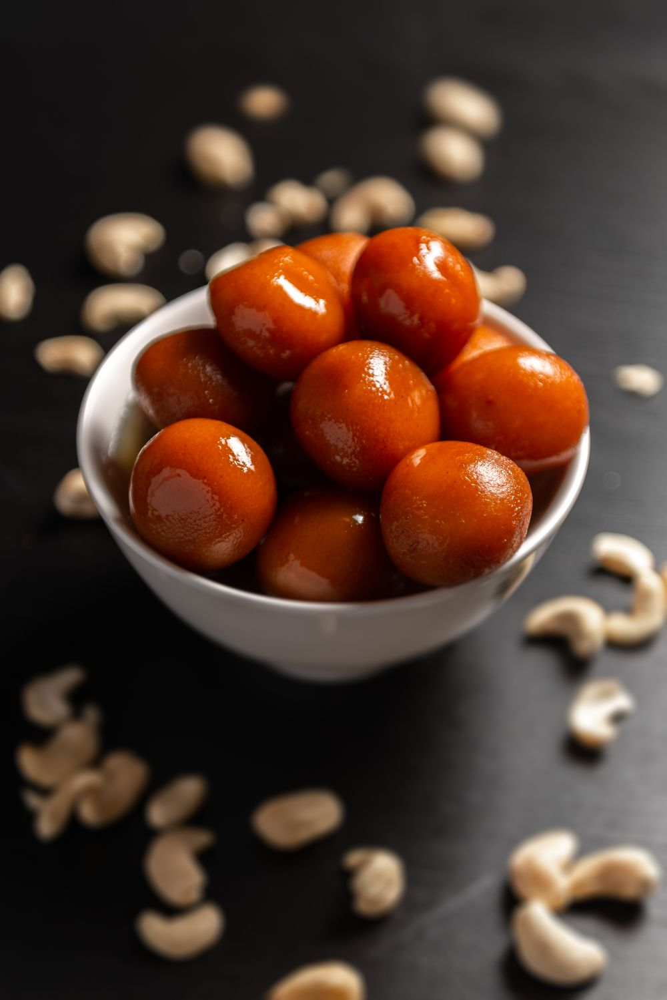
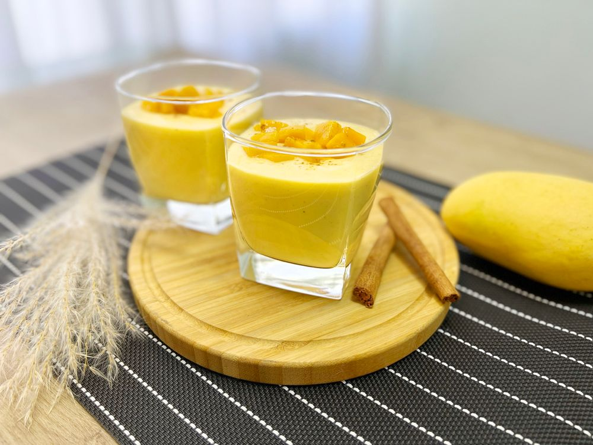

Előétel
Zöldséges szamosza
Ropogós tészta aromás, fűszeres zöldségekkel töltve.

Pakisztáni–indiai étterem
Pakisztáni és indiai ízek Szeged szívében
Fedezd fel a pakisztáni és indiai konyha gazdag ízvilágát, autentikus fűszereit és különleges fogásait.

Rólunk
A Khyber Restaurant Szeged belvárosában várja mindazokat, akik szeretnék felfedezni a pakisztáni és indiai konyha különleges világát.
A gazdag fűszerezés, az aromás fogások és a tradicionális receptek egyedülálló gasztronómiai élményt kínálnak.
Étlap
Válogatás a pakisztáni és indiai konyha jellegzetes fogásaiból.

Előétel
Ropogós tészta aromás, fűszeres zöldségekkel töltve.

Leves
Hagyományos lencseleves, illatos fűszerekkel elkészítve.

Főétel
Aromás basmati rizs puha csirkével és hagyományos fűszerekkel.

Desszert
Puha, tejalapú édesség édes, aromás szirupban tálalva.

Ital
Frissítő, hagyományos joghurtital mangóval.
Kapcsolat
Fedezd fel a pakisztáni és indiai konyha különleges ízeit Szeged belvárosában.
Az útvonaltervezés a pontos cím megadása után válik elérhetővé.
A hívás a telefonszám megadása után válik elérhetővé.
A térkép a pontos cím megadása után jelenik meg itt.